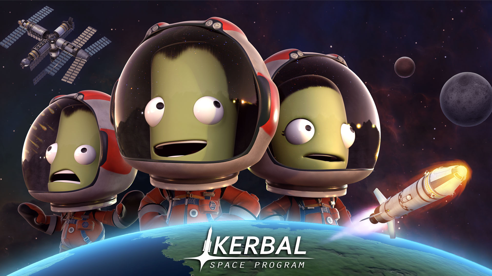
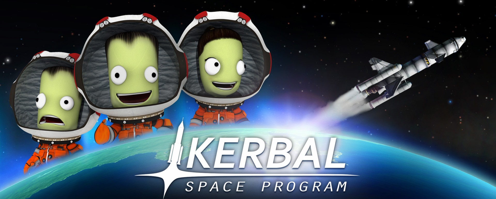

KSP EXPLORER
Bay cao hơn.
Khám phá xa hơn.
KSP EXPLORER · CẨM NANG KERBAL SPACE PROGRAM
Khám phá
Kerbal Space Program.
.jpg)
01 / LOẠI ĐỘNG CƠ
Loại động cơ
Bấm vào mỗi thẻ để xem thông tin ngay tại đây.
Nhiên liệu lỏng
Điều chỉnh lực đẩy linh hoạt, phù hợp cho nhiều giai đoạn bay.
Nhiên liệu rắn
Lực đẩy mạnh lúc phóng nhưng không thể tắt sau khi kích hoạt.
Phản lực khí quyển
Sử dụng oxy trong khí quyển, phù hợp cho máy bay.
Động cơ điện & hạt nhân
Tiết kiệm nhiên liệu cho hành trình dài trong không gian.
02 / VŨ TRỤ SỰ THẬT
Những điều thú vị về vũ trụ
08 phút là thời gian ánh sáng từ Mặt Trời đến Trái Đất.
1 ngày Sao Kim dài hơn một năm trên chính hành tinh này.
Không gian gần như là chân không nên âm thanh không thể truyền đi.
03 / BUỒNG LÁI
Chọn dòng buồng lái
04 / PHÒNG ĐỘNG CƠ
Khám phá theo nhiên liệu
NHIÊN LIỆU LỎNG
Nhiên liệu lỏng
Động cơ trộn Liquid Fuel với Oxidizer để tạo lực đẩy. Đây là loại đa dụng, xuất hiện ở phần lớn tên lửa.
Giải thích
Có thể điều chỉnh lực đẩy, tắt và khởi động lại; nhiều mẫu còn có gimbal để điều hướng tên lửa.
Ưu điểm
Linh hoạt khi bay, điều khiển chính xác và có hiệu suất tốt cho cả phóng lẫn bay quỹ đạo.
Nhược điểm
Cần nhiều bình chứa, hệ thống phức tạp hơn và thường nặng hơn bộ tăng lực rắn cùng lực đẩy.
Ví dụ
Vector, Mainsail, Terrier, Swivel và nhiều động cơ tên lửa đa dụng khác.
Xem danh sách động cơ nhiên liệu lỏng →NHIÊN LIỆU RẮN
Nhiên liệu rắn
Bộ tăng lực dùng nhiên liệu rắn để tạo lực đẩy lớn ngay khi phóng tên lửa.
Giải thích
Khi đã kích hoạt, nhiên liệu cháy liên tục cho đến hết và không thể điều chỉnh như động cơ lỏng.
Ưu điểm
Đơn giản, mạnh, giá thành thấp và rất phù hợp với giai đoạn cất cánh.
Nhược điểm
Không thể tắt hoặc thay đổi lực đẩy sau khi đã khởi động.
Ví dụ
Hammer, Thumper, Kickback, Pollux và Clydesdale.
Xem danh sách động cơ nhiên liệu rắn →PHẢN LỰC KHÍ QUYỂN
Động cơ phản lực
Động cơ lấy oxy trong khí quyển để đốt nhiên liệu, phù hợp cho máy bay và giai đoạn bay thấp.
Giải thích
Hoạt động tốt trong khí quyển nhưng giảm hiệu quả khi lên cao hoặc ra ngoài không gian.
Ưu điểm
Tiết kiệm oxidizer vì sử dụng không khí bên ngoài làm chất oxy hóa.
Nhược điểm
Không hoạt động được trong chân không và lực đẩy bị phụ thuộc độ cao.
Ví dụ
Juno, Wheesley, Panther, Goliath và Whiplash.
Xem danh sách động cơ phản lực →ĐIỆN · HẠT NHÂN · LAI
Động cơ cho hành trình dài
Các lựa chọn chuyên biệt dành cho bay xa, hành trình liên hành tinh hoặc nhiệm vụ cần hiệu suất cao.
Giải thích
Động cơ điện rất tiết kiệm, động cơ hạt nhân hiệu quả trong chân không và động cơ lai có thể đổi chế độ bay.
Ưu điểm
Giảm lượng nhiên liệu cần mang theo và mở rộng khả năng thực hiện nhiệm vụ dài ngày.
Nhược điểm
Lực đẩy thường thấp hoặc cần thiết kế tàu chuyên dụng cùng nguồn điện phù hợp.
Ví dụ
IX-6315 Dawn, LV-N Nerv và CR-7 R.A.P.I.E.R.
Xem thư viện động cơ chuyên biệt →05 / BÁO CÁO
Kho báo cáo
06 / NHIỆM VỤ FILES
KE-01
Hồ sơ mật của nhiệm vụ thám hiểm đặc biệt.

MỞ NHIỆM VỤ KE-01 →